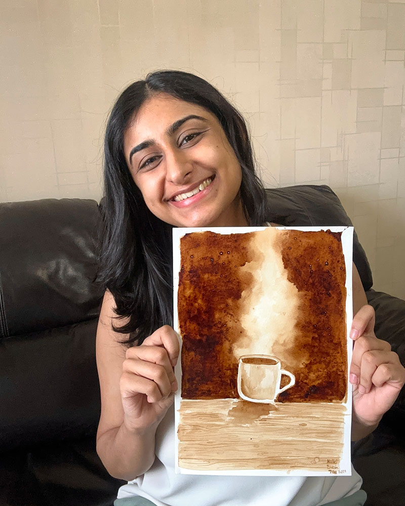
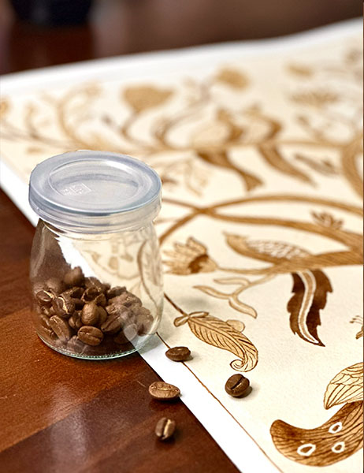
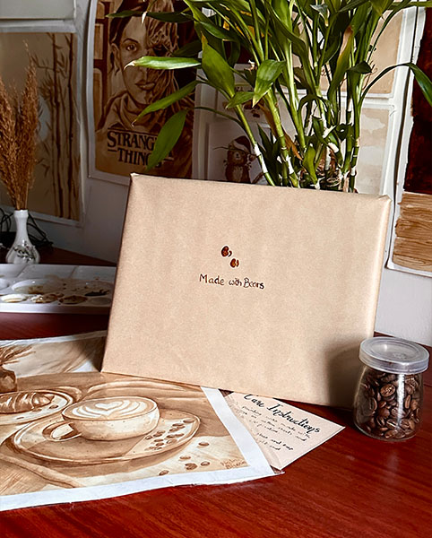

I started painting with coffee almost by accident — a spilled cup, a happy accident of tone and texture, and I was hooked. There's something honest about working with what's already on your desk every morning.

Every piece starts the same way — beans, hot water, patience, and a lot of trial and error to get the right shade of brown. No two batches are ever quite the same, which is part of the charm.

These days, most of what I make goes out as commissions — portraits, pets, and the odd pop-culture tribute. If you've got an idea, I'd love to help bring it to life in coffee.
Share your idea and references
Approve before full work begins
Shipped carefully or collected
Drop a message on instagram, Let's chat over a coffee!